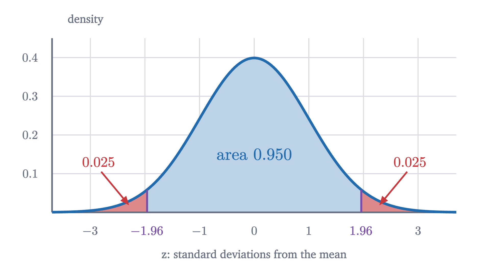
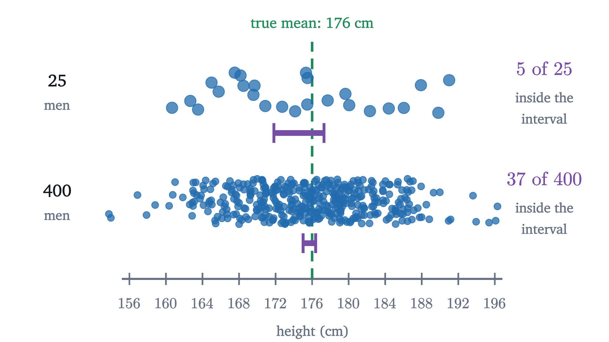
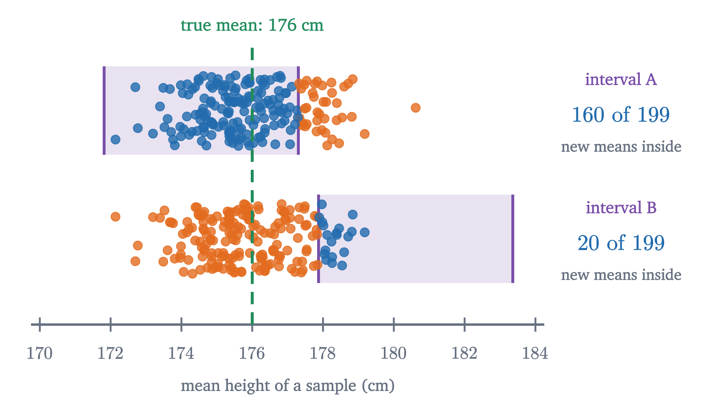
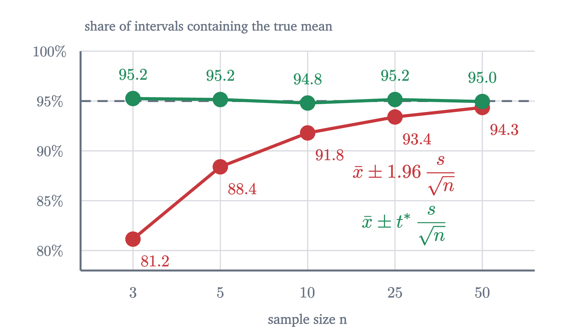

What a 95% confidence interval does and does not say
We derive the interval mean ± 1.96 standard errors, test its 95% coverage by simulation, and go through the common misreadings and why each is wrong.
AssumesStandard error: how 1,000 people speak for a countryThe normal distribution and the 68-95-99.7 rule
A health survey measures the heights of 25 men chosen at random and reports: mean 174.6 cm, 95% confidence interval 171.8 to 177.3 cm. Ask what the “95%” means and most people, including many who publish such intervals, answer that there is a 95% chance that the true average height lies between 171.8 and 177.3.
There is something odd about that answer. The true average height of the population is one fixed number. It does not change when we take a sample, and it either lies between 171.8 and 177.3 or it does not. Nothing in that sentence is left to chance, so what is the 95% the probability of? The answer takes some care to state, and the care matters, because the usual careless version leads to wrong conclusions that this lesson will exhibit with numbers.
What we know about a sample mean
We need a population where we know the truth, so that we can check a method against it. Take the heights of men used in the lesson on the normal distribution: the population mean is $\mu = 176$ cm and the standard deviation is $\sigma = 7$ cm. A researcher who does not know $\mu$ draws $n = 25$ men at random and computes their mean height $\bar X$.
The lesson on standard error proved two facts about $\bar X$. Its expected value is $\mu$, so it is right on average. And its standard deviation, called the standard error, is
Individual men differ from the mean by 7 cm or so, but the average of 25 of them differs from it by only about 1.4 cm. The central limit theorem adds the shape: for a sample of reasonable size, $\bar X$ is approximately normally distributed around $\mu$. (If the population is itself exactly normal, $\bar X$ is exactly normal for every $n$, and heights come close to that.)
Where 1.96 comes from
A normal distribution puts a fixed share of its probability within any given number of standard deviations of its mean. The 68-95-99.7 rule says that about 95% lies within two standard deviations. For an interval that is meant to catch exactly 95%, we want the multiplier to more decimal places.

If $Z$ is a standard normal variable (mean 0, standard deviation 1), then
The area under the normal curve has no formula in elementary functions, so this number comes from numerical integration, the same way every normal table is made; the figure computes it. With multiplier 2 the area would be 0.9545. Applied to $\bar X$, whose mean is $\mu$ and whose standard deviation is 1.4 cm, it says that 95% of samples give a mean within $1.96 \times 1.4 = 2.74$ cm of $\mu$. In the simulation, 192 of the 200 sample means fell between the purple lines.
Turning the statement around
So far the statement runs from the truth to the sample: if $\mu = 176$, the sample mean will probably land between 173.26 and 178.74. The researcher is in the opposite position. She holds a sample mean and wants to say something about $\mu$.
Pause and try
The researcher’s sample of 25 men has mean $\bar x = 174.56$ cm. She does not know $\mu$, but she knows that 95% of samples land within 2.74 cm of it. Find all the values of $\mu$ for which her sample would be one of those 95%.
Show answerHide answer
Her sample is within 2.74 of $\mu$ exactly when $\mu$ is within 2.74 of her sample, because distance is the same in both directions. So the values are those between $174.56 - 2.74 = 171.82$ and $174.56 + 2.74 = 177.30$.
The whole construction rests on that symmetry. “The sample mean is within 2.74 cm of the truth” and “the truth is within 2.74 cm of the sample mean” are the same event. So if the researcher builds an interval reaching 2.74 cm either side of whatever sample mean she gets, the interval contains $\mu$ on exactly the occasions when her sample mean lands inside the band around $\mu$.
The precise statement
Read the clauses against the picture. “Computed from the sample alone” means the researcher can find $L$ and $U$ without knowing $\mu$. In $P(L \le \mu \le U)$ the random objects are the endpoints $L$ and $U$; $\mu$ stands still while the interval lands in different places. “For every possible value of $\mu$” is needed because we do not know which value is the real one, so the guarantee must hold whichever it is.
The proof is exact when $\bar X$ is exactly normal. When $\bar X$ is only approximately normal, by the central limit theorem, the coverage is approximately 95%, and the approximation improves as $n$ grows. The quantity $1.96\operatorname{SE}$ is the margin of error.
For the researcher’s sample, the interval is $174.56 \pm 2.74$, which is the “171.8 to 177.3” of the opening report.
What the 95% refers to
Pause and try
A hundred researchers each draw their own sample of 25 men from this population and each computes $\bar x \pm 2.74$. How many of the hundred intervals do you expect to contain 176? Should you expect exactly that many?
Show answerHide answer
Each interval contains 176 with probability 0.95, independently of the others, so the number that do is binomial with $n = 100$ and $p = 0.95$. Its mean is 95 and its standard deviation is $\sqrt{100 \times 0.95 \times 0.05} \approx 2.2$, so anything from about 91 to 99 would be ordinary.
The figure at the top of the page runs that experiment once. Of the 100 intervals in this run, 96 contain 176 and 4 miss: two because the sample happened to run tall, two because it ran short. The researcher from our report owns the leftmost bar. She cannot see the green line. All she knows is that her bar was produced by a method whose bars cross the line 95 times in 100.
After the sample is drawn there is one specific interval, and it either contains $\mu$ or it does not. “95% confidence” is the name for our position at that point: we are using a method that succeeds 95% of the time, and we do not know whether this is one of the successes.
Three misreadings
”There is a 95% probability that $\mu$ is between 171.82 and 177.30.” In this sentence nothing is random. Both endpoints are now fixed numbers and so is $\mu$, so the statement is true or false, and the theorem assigns it no probability. You might object that this is hair-splitting, since we are still uncertain. But to turn uncertainty about $\mu$ into a probability you need an account of how likely each value of $\mu$ was before the data, which is the prior of Bayes’ theorem, and the answer then depends on that prior. A researcher who already knew from a census that $\mu$ lies between 175 and 177 would not think it 95% likely to be in her interval if the interval came out as 177.9 to 183.4. The last problem gives a case where a “50%” interval can be seen to contain the truth with certainty.
”95% of the men are between 171.82 and 177.30 cm.” The interval is about the mean, and says nothing of the kind about individuals.

Only 5 of the 25 men in the sample have heights inside the interval. With 400 men the interval for the mean shrinks to $\pm 0.69$ cm and holds an even smaller share of the data. A range that holds 95% of individuals is $\mu \pm 1.96\sigma$, about 162 to 190 cm, and it does not shrink with $n$.
”If the study were repeated, 95% of the new sample means would fall between 171.82 and 177.30.”
Pause and try
Our researcher’s interval is centered at 174.56, which is 1.44 cm below the truth. New sample means are centered on 176, with standard deviation 1.4. Will more or fewer than 95% of them land in her interval? Estimate the share by finding how many standard errors each end of her interval is from 176.
Show answerHide answer
Her interval runs from 171.82 to 177.30. In standard errors from 176 these are $(171.82 - 176)/1.4 = -2.99$ and $(177.30 - 176)/1.4 = 0.93$. A normal variable is below 0.93 about 82% of the time and below $-2.99$ almost never, so about 82% of new means land inside, well short of 95%.

In the simulation, 160 of the other 199 sample means fall inside the researcher’s interval, which is 80%. For interval B, one of the four that missed, the count is 20 of 199. Averaged over all the intervals one might start from, the share is 83%: the difference between two independent sample means has variance $2\operatorname{SE}^2$, so it is within $1.96\operatorname{SE}$ with probability $P(|Z| \le 1.96/\sqrt2) = P(|Z| \le 1.386) \approx 0.834$. The interval is built to catch $\mu$, and nothing in its construction aims it at other samples.
Choosing the confidence level
Nothing forces the level to be 95%. Replacing 1.96 by another multiplier $z^*$ gives another level: $z^* = 1.282$ for 80%, $1.645$ for 90%, $2.576$ for 99%. Each is found the same way, as the point where the central area under the normal curve reaches the level.
Confidence is bought with width. A 100% interval would have to run from minus infinity to infinity. The only way to get a narrower interval at the same level is a smaller standard error, which means a larger sample: because $\operatorname{SE} = \sigma/\sqrt n$, halving the width costs four times the data.
When $\sigma$ is unknown: the $t$ correction
The theorem assumed that $\sigma$ is known. A researcher who does not know the population mean rarely knows the population standard deviation. The natural repair is to estimate $\sigma$ by the sample standard deviation
from the first lesson of this series, and to use $\bar x \pm 1.96\, s/\sqrt n$. For large samples this works, because $s$ is then close to $\sigma$. For small samples it fails, and a simulation shows how badly.

With $n = 5$ the “95%” interval contains the true mean only 88% of the time, and with $n = 3$ only 81%. The reason is that $s$ is itself computed from the sample and so varies from sample to sample. In a small sample it is often well below $\sigma$, and those are the samples whose intervals come out too short. Dividing $\bar X - \mu$ by the random quantity $s/\sqrt n$ in place of the fixed $\sigma/\sqrt n$ produces a ratio that is more spread out than a standard normal variable.
William Gosset, a chemist at the Guinness brewery writing under the name “Student”, found the distribution of that ratio in 1908, by a mix of algebra and simulated samples; Fisher proved it in 1925. We state his result without proof.
The second sentence follows from the first by the rearrangement in our earlier proof, with $s/\sqrt n$ in the role of $\operatorname{SE}$. The $t$ distributions are bell-shaped with heavier tails than the normal, so $t^*$ exceeds 1.96, and it comes from a table:
| $n$ | 3 | 5 | 10 | 25 | 50 | 1000 |
|---|---|---|---|---|---|---|
| degrees of freedom | 2 | 4 | 9 | 24 | 49 | 999 |
| $t^*$ for 95% | 4.303 | 2.776 | 2.262 | 2.064 | 2.010 | 1.962 |
The green line in the figure uses these multipliers, and its simulated coverage stays within a quarter of a point of 95% at every sample size. By $n = 50$ the correction is under 3%, which is why 1.96 is used freely for large samples. The theorem needs a normal population. For small samples from a strongly skewed population neither multiplier is trustworthy.
Worked examples
Where the procedure breaks
The coverage guarantee is a theorem with hypotheses: a random sample, and a sample mean that is normal or nearly so. A biased sample moves every interval the same way, and the 95% is then meaningless however large $n$ is.
The normal approximation can also fail outright. Suppose 5% of a factory’s parts are defective and an inspector checks 20. With probability $0.95^{20} \approx 0.358$ she finds none. Then $\hat p = 0$, the estimated standard error is $\sqrt{0 \times 1/20} = 0$, and the “95% interval” is the single point 0, which is wrong. Working through the other counts, the interval $\hat p \pm 1.96\sqrt{\hat p(1 - \hat p)/20}$ contains 0.05 only when she finds 1, 2, 3 or 4 defectives, which happens with probability 0.639. A procedure labeled 95% that covers 64% of the time is a broken procedure. A common rule is to require at least 10 successes and 10 failures before trusting the formula for a proportion.
Stepping back
The hard part was a matter of grammar. A probability statement about the sample mean, given the truth, had to be turned into a statement about the truth that someone holding one sample could use. The symmetry of distance does the turning, and the price is that the probability stays attached to the sampling. We end with a guarantee about a method.
That pattern, judging one result by the long-run behavior of the procedure that produced it, runs through classical statistics. The next lesson meets it again in hypothesis tests, where the question becomes whether the data are compatible with one particular value of $\mu$.
Check yourself
A study reports a 95% confidence interval of 12.1 to 15.3 mg for the mean dose a treatment requires. Which statement is correct?
Problems
The first three apply the formula. The next four ask what the interval means and when it holds. The last is a challenge.
Problem 1
Light bulb lifetimes from a production line have standard deviation 120 hours. A random sample of 64 bulbs has mean lifetime 1010 hours. Find the 95% confidence interval for the mean lifetime.
Show solutionHide solution
$\operatorname{SE} = 120/\sqrt{64} = 15$ hours. The margin is $1.96 \times 15 = 29.4$ hours, so the interval is $1010 \pm 29.4$: from 980.6 to 1039.4 hours.
Problem 2
For the bulbs of the previous problem, find the 90% and the 99% confidence intervals, and the ratio of their widths.
Show solutionHide solution
At 90% the multiplier is 1.645, giving a margin of $1.645 \times 15 \approx 24.7$: from 985.3 to 1034.7 hours. At 99% it is 2.576, giving $2.576 \times 15 \approx 38.6$: from 971.4 to 1048.6 hours. The ratio of widths is $2.576/1.645 \approx 1.57$. Going from 90% to 99% confidence makes the interval 57% wider.
Problem 3
In a random sample of 400 students, 120 walk to school. Find a 95% confidence interval for the proportion of all students who walk.
Show solutionHide solution
$\hat p = 0.30$, and the estimated standard error is $\sqrt{0.30 \times 0.70/400} = \sqrt{0.000525} \approx 0.0229$. The margin is $1.96 \times 0.0229 \approx 0.045$, so the interval is 0.255 to 0.345. There are 120 successes and 280 failures, far more than 10 of each, so the formula is safe.
Problem 4
Heights have standard deviation 7 cm. How many men must be sampled for the 95% confidence interval for the mean height to reach at most 1 cm either side of the sample mean?
Show solutionHide solution
We need $1.96 \times 7/\sqrt n \le 1$, that is, $\sqrt n \ge 13.72$, so $n \ge 188.2$. Since $n$ is a whole number, 189 men are needed. Check: $1.96 \times 7/\sqrt{189} \approx 0.998$. Compare with the lesson’s $n = 25$, which gave 2.74 cm: cutting the margin by a factor of 2.74 costs $2.74^2 \approx 7.5$ times the sample.
Problem 5
Two research teams independently sample the same population and each computes a 95% confidence interval for $\mu$. (a) What is the probability that both intervals contain $\mu$? (b) If twenty teams do this, what is the expected number of intervals that miss, and what is the probability that none of them misses?
Show solutionHide solution
(a) The samples are independent, so the two coverage events are independent, and the probability that both happen is $0.95^2 = 0.9025$. (b) The number of misses is binomial with $n = 20$ and $p = 0.05$. Its expected value is $20 \times 0.05 = 1$. The probability of no misses is $0.95^{20} \approx 0.358$. So among twenty honest 95% intervals, it is more likely than not (probability 0.642) that at least one fails to contain the truth.
Problem 6
A sample of 16 measurements has mean 52.0 and sample standard deviation 6.0. The population is roughly normal and its standard deviation is unknown. Find a 95% confidence interval for the mean, using $t^* = 2.131$ for 15 degrees of freedom. Explain why 1.96 is the wrong multiplier.
Show solutionHide solution
The estimated standard error is $6.0/\sqrt{16} = 1.5$. The margin is $2.131 \times 1.5 \approx 3.20$, so the interval is 48.8 to 55.2. The multiplier 1.96 is correct when the standard error is known exactly. Here it is estimated from 16 values, and $s$ varies from sample to sample. Samples in which $s$ comes out small produce short intervals that miss too often, so $\bar x \pm 1.96\,s/\sqrt n$ would cover less than 95% of the time. The larger multiplier restores the coverage.
Problem 7
A report states: “The mean commute is 31 minutes (95% CI 28 to 34), based on a random sample of 400 workers.” Decide whether each statement follows, and explain. (a) About 95% of workers commute between 28 and 34 minutes. (b) If the standard deviation of commutes is $\sigma$, then $\sigma$ is about 30 minutes. (c) A sample of 1600 workers would give an interval about half as wide. (d) The true mean cannot be 35 minutes.
Show solutionHide solution
(a) No. The interval is about the mean. (b) Yes. The margin is 3 minutes, so $\operatorname{SE} = 3/1.96 \approx 1.53$, and $\sigma = \operatorname{SE}\sqrt n \approx 1.53 \times 20 \approx 30.6$ minutes. Individual commutes vary by about half an hour, ten times the margin of error. (c) Yes. The standard error is proportional to $1/\sqrt n$, and $\sqrt{1600/400} = 2$. (d) No. One interval in twenty misses the truth. A true mean of 35 would put the sample mean $4/1.53 \approx 2.6$ standard errors below it, which is unusual but possible.
Problem 8
(A 50% interval that is sometimes certain.) Let $X_1$ and $X_2$ be independent, each uniformly distributed on the interval from $\theta - \frac12$ to $\theta + \frac12$, where $\theta$ is unknown. Consider the interval from the smaller observation to the larger. (a) Show that it is a 50% confidence interval for $\theta$. (b) Suppose the two observations come out 0.8 apart. Show that the interval is then certain to contain $\theta$. (c) What does this say about reading the confidence level as the probability that a particular computed interval is right?
Show solutionHide solution
(a) The interval from $\min(X_1, X_2)$ to $\max(X_1, X_2)$ contains $\theta$ exactly when one observation is below $\theta$ and the other above. Each observation is below $\theta$ with probability $\frac12$, independently, so this has probability $2 \times \frac12 \times \frac12 = \frac12$, whatever $\theta$ is.
(b) Every observation is within $\frac12$ of $\theta$, so $\theta \ge \max - \frac12$ and $\theta \le \min + \frac12$. If $\max = \min + 0.8$, then $\theta \ge \min + 0.3$ and $\theta \le \min + 0.5 = \max - 0.3$. So $\theta$ lies strictly between the two observations, with certainty.
(c) The procedure covers $\theta$ in exactly 50% of samples, as the definition requires. Yet some of the intervals it produces can be recognized, from the data alone, as certain to be right, and others (when the observations are very close together) as very likely to be wrong. The confidence level describes the procedure averaged over all samples. It is not the probability that the particular interval in hand contains the parameter.